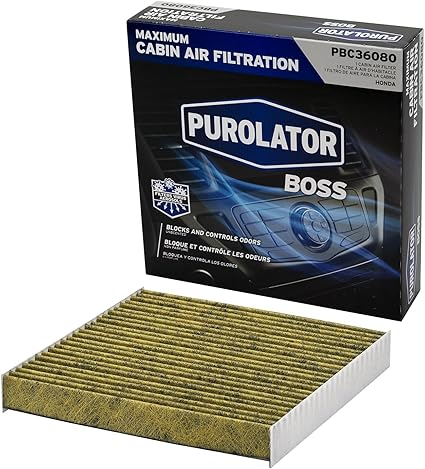
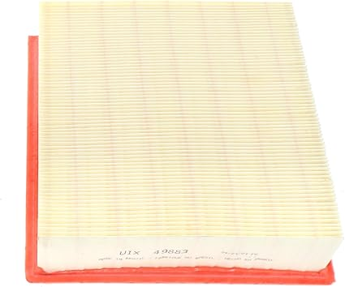
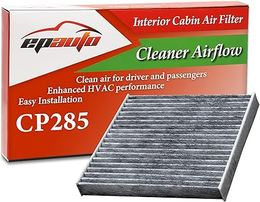
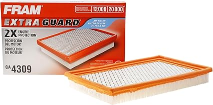

May 2026
There's a reason flatlinefilters is trending right now. People want quality without overpaying, and 2026 delivers solid options at every price point.
Going with the cheapest option — Budget flatlinefilters cut corners. Spending 20% more often gets something that lasts 3x longer.
Not measuring — "It looked bigger online" is the #1 return reason for flatlinefilters. Measure twice.
Overbuying features — Most people use 20% of high-end flatlinefilters features. Don't pay for what you'll never touch.

→ #2 — Aerostar 21.5x21.5x1 MERV 8 Pleated Air Filter 6 Pack AC Furnace HVAC — Consistently rated

→ #5 — Filter King 8x24x1 Air Filter MERV 8 4-Pack Dust Allergy Control AC Furnace — Consistently rated

→ #1 — Simply 8x24x1 Air Filter Merv 8 4 Pack For Home AC Furnace HVAC — Best seller

→ #4 — Filter King 8x18x1 Air Filter MERV 8 4-Pack Dust Allergy Control AC Furnace — Great value
→ #3 — Simply 8x12x1 Air Filter Merv 8 4 Pack For Home AC Furnace HVAC — Consistently rated
The best flatlinefilters is the one that fits your needs and budget. Our detailed comparisons on flatlinefilters.com make that call easier.